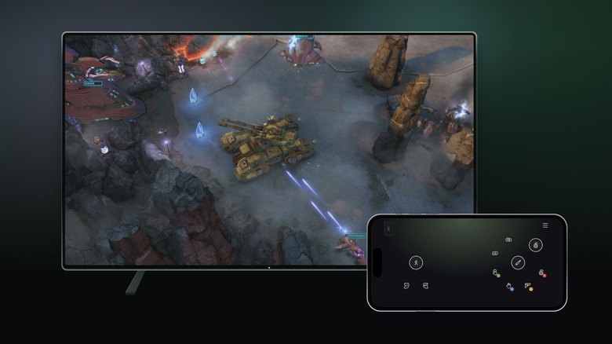

科技產品 T1
Anthropic 開源 FlashProve 研究原型，讓使用者驗證回答是否來自指定模型權重
發佈時間
Anthropic／FlashProve
Anthropic公開FlashProve程式、協定文件與Lean證明，嘗試以密碼學證明核對模型輸出與已承諾的權重，同時隱藏權重本身。
- 釋出包含prover、C++快速verifier、Lean verifier，以及技術報告與證明文件。
- 程式、Lean證明與文件採Apache 2.0；儲存庫明示為未維護的研究原型。
- 效能展示使用特定量化Llama 4 Maverick與H100設定，不代表所有模型或Claude服務已普遍支援。
完整報告收合報告
事件背景與影響
這可協助第三方模型路由、稽核及推論完整性檢查，但證明「由哪個模型算出」不同於證明答案符合事實。
事件與發佈依據
官方11/2文章的本次釋出段落；不是以11/3頁面更新或11/4媒體介紹作為首發。
收錄紀錄
10/22至11/4十四份日報查詢FlashProve、provable inference及可證明推論均無同事件；再核同窗31列產品表亦無。
尚待確認
原型、形式化陳述與實際程式仍需獨立稽核；不可把密碼學完整性當成事實正確性、安全保證或已正式商用的Claude API功能。本報未執行其程式或效能測試。
相關實體與概念
Anthropic、FlashProve、zkSNARK、Lean、模型權重承諾、推論完整性。
科技產品 T2

Microsoft手機控制預覽示範；不是本報實機測試，也不是Nano硬體照片。 Microsoft／Engadget
Xbox 開放兩項雲端遊戲控制預覽，手機可當電視控制器並測試 Nano 直連 Wi-Fi
發佈時間
Microsoft／Xbox Cloud Gaming、Nano Controller
支援的智慧電視可透過Android或iOS手機瀏覽器取得控制介面；美國玩家另可預覽Nano Controller以Wi-Fi直接連到雲端遊戲服務。
- 電視端在Settings、Account啟用Preview Features；手機無須另外安裝專用控制器App。
- 美國Nano預覽初期支援電視及網頁，設定可用Android Xbox beta或PC Xbox Accessories。
- PC設定須加入Xbox Insider，遊玩使用設定時的同一帳號；部分遊戲提供特製觸控配置。
完整報告收合報告
事件背景與影響
手機選項降低臨時遊玩的控制器門檻，直連雲端則嘗試減少輸入傳遞環節；兩者都有裝置、地區與測試資格限制。
事件與發佈依據
Xbox Wire 11/4 19:00 UTC公告Starting today的兩項輸入預覽。
收錄紀錄
十四份日報與同窗產品表未收錄此次手機控制及cloud connect預覽；不重報Nano硬體首發或既有雲端付費時數限制。
尚待確認
預覽不等於全球正式開放，所有電視或遊戲未必支援。降低延遲是廠商目標，不是本報測得的保證；配圖為Microsoft功能示範，非本報實機畫面。
相關實體與概念
Xbox、Cloud Gaming、Nano Controller、瀏覽器控制、Wi-Fi、Insider。
科技產品 T3
Broadcom 推出 vSphere Express，為總計不超過一百二十八核心的環境提供虛擬化方案
發佈時間
Broadcom／VMware vSphere Express for Essential Virtualization
vSphere Express以vSphere 9為基礎，面向所有部署環境合計不超過128個核心的需求，納入移轉、高可用性、分散式交換器與維護能力。
- 官方列出vMotion、HA、Distributed Switch、QuickPatch及TPM 2.0／vTPM 2.0。
- 128核心限制按整體環境計算，不能解讀為每台主機各自享有128核心。
- 官方稱所有地區立即供應，TechTarget卻稱2027年1月底，兩種說法尚未一致。
完整報告收合報告
事件背景與影響
小型虛擬化部署多了一個明確核心上限的選項；採購仍須核對實際授權條款、通路供貨與價格。
事件與發佈依據
官方VCF產品組合公告11/4 17:00 UTC中的vSphere Express獨立方案段落。
收錄紀錄
十四份日報查詢VMware及vSphere Express無命中，同窗產品表亦無；既有VCF版本更新不混作本次新品。
尚待確認
媒體引述通路的每年9,600美元不是官方全球統一牌價；本報不以此當確定售價。供應日期衝突保留，採購前應取得正式報價與交付確認。
相關實體與概念
Broadcom、VMware、vSphere 9、Express、核心授權、虛擬化。
全球焦點 1
續報｜民主黨贏得美國國會兩院控制權，川普任期後半將面對分立政府
發佈時間
AP報導民主黨取得眾院與參院多數，結束共和黨同時控制白宮與國會的局面；新國會將具更強監督與阻擋任命能力。
- 民主黨跨過眾院多數門檻，亦贏得參院控制權。
- 勝選意味新一屆國會的權力更替，不是當日立即更換現任議員。
- 生活成本與伊朗戰爭是報導所述的重要選民議題。
完整報告收合報告
事件背景與影響
立法、預算及政府監督的權力配置改變，但白宮仍由川普掌握，民主黨主張不會自動成為法律。
事件與發佈依據
11/4美國計票與媒體勝選判定，AP同日結果報導；不以live頁11/3建立時間當結果發布。
收錄紀錄
2026-11-04已收錄投票及首批關閉；新增兩院多數的媒體判定，而非再次介紹選舉民調。
尚待確認
媒體勝選判定不是各州最終認證；部分選區仍在計票，本報不填入未定的最終席次，也不把競選承諾當已通過政策。
相關實體與概念
美國、民主黨、共和黨、川普、眾議院、參議院、分立政府。
全球焦點 2
續報｜俄國攻擊使基輔停電停水，烏南援助站空襲死亡數上修至四十人
發佈時間
俄國攻擊使基輔及周邊停電停水數小時；澤倫斯基稱Komyshuvakha學校與避難處遭襲死亡人數升至40。
- 援助站攻擊發生於11/2，不是11/4新發生的同一場爆炸。
- 總統表示另有30人可能仍困瓦礫，不能把可能受困者加進確認死亡數。
- 基輔設置應急支援點，停水期間呼籲居民利用公共飲水設施。
完整報告收合報告
事件背景與影響
傷亡上修顯示救援仍未結束，能源與供水中斷也持續影響大量平民的基本生活。
事件與發佈依據
AP 11/4 10:27:23 UTC報導當日停電與澤倫斯基新確認死亡數。
收錄紀錄
2026-11-03已記Komyshuvakha援助站26死；新增死亡40與11/4能源設施攻擊影響，11/2原始空襲仍是背景。
尚待確認
傷亡與受困數為烏方公布，搜救仍可能改變數字；Local10時間欄位互相矛盾，本文以AP原稿明列時間為依據，詳見來源筆記。
相關實體與概念
烏克蘭、俄羅斯、基輔、Komyshuvakha、人道援助、供水供電。
全球焦點 3
續報｜北韓再向東部海域發射飛彈，官媒稱完成新防空系統與巡弋攻擊演練
發佈時間
北韓官媒稱週三測試新型防空飛彈系統，另以長程巡弋飛彈部隊演練攻擊模擬機場；南韓軍方亦通報朝海域發射。
- Reuters稱南韓偵測發射的地點為東岸Sondok一帶。
- KCNA將其中一項活動描述為防空系統測試，另一項為巡弋飛彈攻擊演練。
- 官媒所稱可靠度與導引表現不是獨立驗證結果。
完整報告收合報告
事件背景與影響
新的發射與演練增加區域安全壓力，外界仍須區分偵測到的活動與北韓對性能的自述。
事件與發佈依據
Reuters 11/4 16:18 EST＝21:18 UTC，報導KCNA確認11/4測試；南韓同日已偵測多枚發射。
收錄紀錄
2026-10-30已收錄另一輪短程飛彈發射；今天新增11/4獨立試射及官媒對武器用途的說法。
尚待確認
不能把所有發射一律寫成彈道飛彈；本報未獨立核實武器性能。媒體附11/3資料影像不當作11/4試射照片。
相關實體與概念
北韓、南韓、KCNA、防空飛彈、巡弋飛彈、軍事演練。
全球焦點 4
印尼軍方宣布增派逾兩萬人員至雅加達，總統遭監聽指控引發安全關注
發佈時間
印尼軍方官員稱，逾20,000名部隊及人員將部署首都雅加達；當局同時調查涉及總統通訊的非法監聽指控。
- 海軍官員列出部署合計20,980人員，包含海軍及陸戰隊等單位。
- 軍方發言人稱部署屬維護安全與領土完整的正常準備。
- 三名高階警察將領的拘留及監聽嫌疑是前一天已公布的背景。
完整報告收合報告
事件背景與影響
大規模首都兵力調動與高階警察調查交疊，牽涉國家安全及軍警權力運作，卻不能據此推論已發生政變。
事件與發佈依據
AP 11/4 06:19:35 UTC報導當日軍方部署；此前拘留將領並非今天才發生。
收錄紀錄
十四份日報無本次部署事件；採11/4新部署，不將11/3宣布的監聽案偽裝成今日新逮捕。
尚待確認
監聽動機、幕後指使與責任仍待調查；軍方未充分說明每項部署目的，不能把時間相近當成因果證據或定罪。
相關實體與概念
印尼、Prabowo Subianto、雅加達、軍方、警察、非法監聽。
全球焦點 5
續報｜以色列總統接受正式國會選舉結果，展開組閣諮詢並呼籲政黨妥協
發佈時間
赫佐格正式接收中央選舉委員會公布的結果，宣布開始諮詢各政黨，要求在無明確勝方的局面中尋求可行政府。
- 結果由中央選委會主席、最高法院法官Noam Sohlberg交付。
- 總統稱將諮詢政黨代表，必要時進行更多輪會談。
- 外國影響及資金疑慮仍由相關執法機關調查。
完整報告收合報告
事件背景與影響
選舉由票數爭議進入憲政組閣程序，但接受結果不等於任何候選人已組成多數聯盟。
事件與發佈依據
ToI 11/4 13:29以色列標準時間刊登總統當日演說全文；非重用先前出口民調。
收錄紀錄
2026-10-28已收錄投票與出口民調未過半；新增正式結果交付接受及組閣諮詢程序。
尚待確認
正式接受結果不是宣告所有干預疑慮不存在，也不是聯盟談判完成；不能把不同反對黨席次相加就稱已成立共同政府。
相關實體與概念
以色列、Isaac Herzog、Knesset、Noam Sohlberg、組閣、選舉認證。
全球焦點 6
來源標示為2026年11月4日歐盟年度擴大方案發布會。 Claudio Centonze／European Commission，© European Union 2026；2EU提供800px版本
歐盟執委會採納年度擴大方案，為蒙特內哥羅等四國提出指示性談判路線
發佈時間
執委會提出蒙特內哥羅、阿爾巴尼亞、摩爾多瓦及烏克蘭的指示性路線圖，將改革要求與談判進度連結。
- 官方稱蒙特內哥羅已暫時關閉21個談判章節，可能在年底完成其餘章節。
- 四國進度須依民主、法治與基本權利改革判斷，不是無條件時程。
- 方案亦提出能源、交通、數位及國防等領域的逐步整合框架。
完整報告收合報告
事件背景與影響
擴大程序更具體地列出接下來的制度工作，但成員國同意、改革與條約批准仍是必要條件。
事件與發佈依據
官方11/4稿明列當日採納2026 Enlargement Package；此前草案與預告不算今日決議。
收錄紀錄
十四份日報無本次正式方案與四國路線圖；不是把早先入盟願景當已完成加入。
尚待確認
完成談判、簽署條約及正式入盟是不同階段；本報不把2027簽約構想或2028入盟推估當已批准日期。
相關實體與概念
歐盟執委會、Marta Kos、蒙特內哥羅、阿爾巴尼亞、摩爾多瓦、烏克蘭、法治。
全球焦點 7
南非舉行地方政府選舉，供水、供電及公共服務成為選民焦點
發佈時間
南非選民就各地方議會投票，公共供水、供電及地方治理受到關注；本次程序決定地方代表，不是直接選總統。
- 官方列出2,920萬登記選民與23,696個投票站。
- 選舉涵蓋八個都會、44個區及205個地方自治體議會。
- 議會代表產生後仍涉及地方領導與多數安排，投票不等於結果已公布。
完整報告收合報告
事件背景與影響
地方議會負責居民日常服務，選後若無單一多數，聯盟談判亦可能影響城市治理。
事件與發佈依據
AP 11/4 05:15:10 UTC報導當日投票；投票07至21南非時間落在研究窗內。
收錄紀錄
十四份日報的南非奧運申辦是另一事件；未曾收錄本次正式地方投票。
尚待確認
截點不把支持度預測寫成最終得票或席次；SAnews原稿較早發布，僅用作投票制度背景，不以更新時間偽裝首發。
相關實體與概念
南非、IEC、ANC、地方議會、公共服務、聯盟治理。
全球焦點 8
續報｜西班牙總理指定 Carlos Cuerpo 暫接交通部，延續鐵路事故後的政府應對
發佈時間
桑傑士宣布由副首相Carlos Cuerpo暫時主管交通與永續運輸部，接替已辭職的Óscar Puente，任務延續至11/29大選。
- 官方表示已向國家元首告知決定，將以王室法令正式處理。
- Cuerpo將暫時接掌交通部，政府稱將持續支援受影響者並恢復鐵路服務。
- Puente辭職發生於11/3，不能寫成11/4才首次提出。
完整報告收合報告
事件背景與影響
鐵路安全與事故應對進入政治責任及行政接續階段；更換部長本身不代表事故技術原因已查明。
事件與發佈依據
Moncloa官方11/4上午聲明的新任命決定；Puente前一日辭職為背景。
收錄紀錄
2026-10-30已收錄列車事故及傷亡；今日新增政府人事安排，不重列事故本身占名額。
尚待確認
官方人事聲明未重新確認事故死亡總數；先前日報74死與部分媒體69死口徑未解，本文不選一數覆蓋另一數，也不以政治責任代替司法歸責。
相關實體與概念
西班牙、Pedro Sánchez、Carlos Cuerpo、Óscar Puente、Urda、鐵路安全。
全球焦點 9
衣索比亞驅逐六名蘇丹領事人員並關閉館舍，鄰國外交關係再惡化
發佈時間
衣索比亞要求蘇丹在Assosa的六名領事人員於48小時內離境，並要求關閉館舍，兩國互控支援敵對勢力的爭端升高。
- Reuters引述衣方高層官員確認六人及48小時期限，未提供完整決定理由。
- AP另報導要求關閉位於西部邊境城市的蘇丹領事館。
- 兩方對支援叛軍的指控均有否認，不能當成無爭議事實。
完整報告收合報告
事件背景與影響
外交管道縮減可能增加蘇丹與衣索比亞衝突外溢的風險，但驅逐外交人員不等於已正式開戰。
事件與發佈依據
Reuters 11/4 06:49 EST＝11:49 UTC報導官員當日確認驅逐；AP17:51:41 UTC補述關館。
收錄紀錄
十四份日報的衣索比亞營地空襲及蘇丹對俄合作均為不同事件；無本次Assosa領事驅逐命令。
尚待確認
部分資訊來自匿名官員，外交與安全指控尚未獨立核實；本報不宣稱兩國已斷絕全部外交關係或確認跨境軍事行動。
相關實體與概念
衣索比亞、蘇丹、Assosa、領事館、RSF、Tigray、非洲之角。
全球焦點 10
波蘭維持參考利率百分之三點七五，通膨回到目標容忍區間上緣
發佈時間
波蘭貨幣政策委員會維持參考利率3.75%；十月CPI年增率降至3.5%，仍高於2.5%的目標中點。
- 參考利率維持3.75%，存款利率3.25%，倫巴德貸款利率4.25%。
- 十月通膨3.5%，低於九月4.1%，位於2.5%加減1個百分點區間上緣。
- 銀行公會指出政府燃料措施影響價格，後續仍須觀察通膨持續性。
完整報告收合報告
事件背景與影響
政策暫停讓借貸條件維持穩定，但燃料補助與能源成本仍影響通膨，單月回落不代表價格壓力已永久消失。
事件與發佈依據
Bankier 11/4 14:59波蘭時間報導當日貨幣政策決議，並以銀行公會11/4說明交叉核對。
收錄紀錄
十四份日報的波蘭邊境及司法爭議不是本次利率決議；無同次政策事件。
尚待確認
銀行公會分析不是央行前瞻承諾；不把市場升降息預期當已決定。央行猜測網址回空，本報明列實際讀到的公會與金融媒體來源。
相關實體與概念
波蘭、NBP、RPP、ZBP、參考利率、CPI、燃料補助。
研究備註
時間、來源與後續追蹤
研究截點 2026-11-05 08:00:53（Asia/Taipei）
研究時間與範圍
研究截點：2026-11-05 08:00:53（Asia/Taipei）。全球新聞：2026-11-04 08:00:53 至 2026-11-05 08:00:53（Asia/Taipei）。科技產品：2026-10-22 08:00:53 至 2026-11-05 08:00:53（Asia/Taipei）。